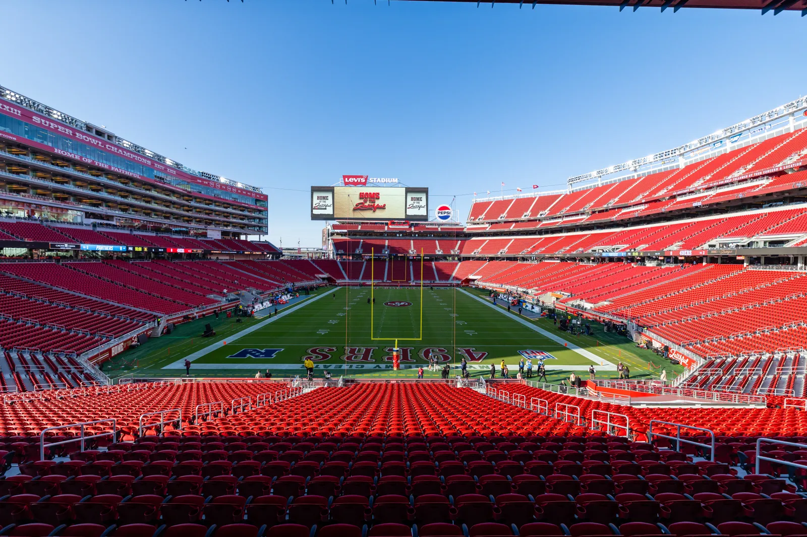
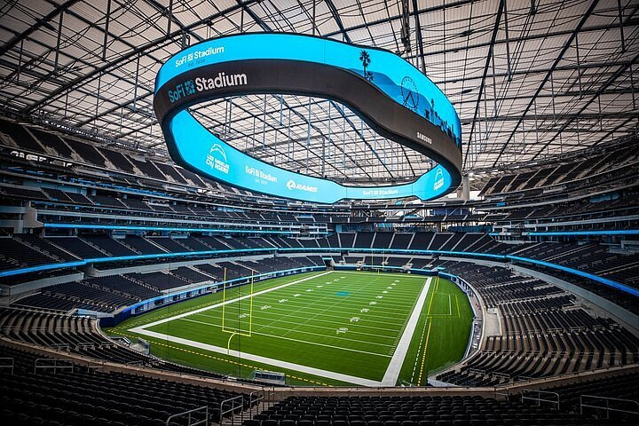
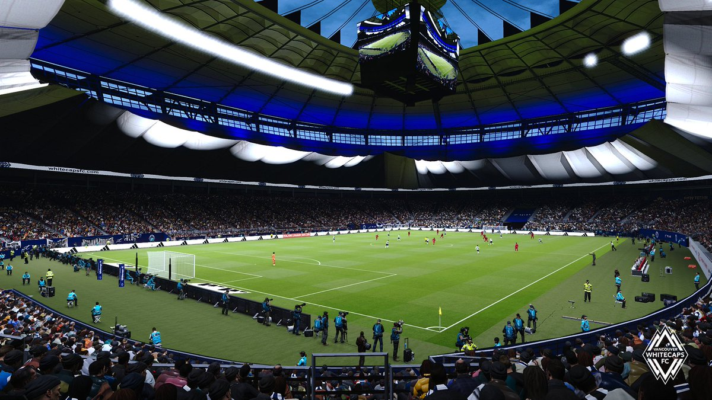

Canadá
Anfitrión

Bosnia y Herzegovina
UEFA

Catar
AFC

Suiza
UEFA
Estadísticas del grupo
Selecciones
4 equipos
Partidos
6 encuentros
Clasifican
2 directos
Sede principal
Toronto, Canadá
Inicio del grupo
12 Jun 2026
Cierre del grupo
25 Jun 2026
Favorita
Suiza
Ranking FIFA más alto
19° Suiza
Estadios y ciudades

BMO Field — Toronto, Canadá
Sede del partido inaugural: Canadá vs Bosnia y Herzegovina el 12 de junio. Capacidad 45,000.

Levi's Stadium — San Francisco, EE.UU.
Sede del partido Catar vs Suiza el 13 de junio.

SoFi Stadium — Los Ángeles, EE.UU.
Sede del partido Suiza vs Bosnia y Herzegovina el 18 de junio.

BC Place — Vancouver, Canadá
Sede del partido Canadá vs Catar el 18 de junio.
Historia de las selecciones
Canadá
Debutó en un Mundial en México 1986 sin ganar ningún partido. En Qatar 2022 regresó tras 36 años de ausencia con una generación liderada por Alphonso Davies. Ahora como anfitrión busca su primera victoria mundialista.
Bosnia y Herzegovina
Nación futbolística joven que debutó en Brasil 2014. Cuenta con figuras históricas como Edin Dzeko, máximo goleador de su selección con 73 goles. En 2026 regresa tras eliminar dramáticamente a Italia en la repesca europea.
Catar
Organizó el Mundial 2022 convirtiéndose en el primer país árabe anfitrión. Fue la primera selección anfitriona eliminada en fase de grupos perdiendo los 3 partidos. En 2026 llega con más experiencia internacional.
Suiza
Con 13 participaciones mundialistas es la más experimentada del grupo. Su mejor época fue en los años 50 cuando llegó a cuartos de final en tres ocasiones. Hoy es una selección sólida y organizada que raramente decepciona.
Fixture del grupo
12 Jun · Toronto
13 Jun · San Francisco
18 Jun · Los Ángeles
18 Jun · Vancouver
25 Jun · Vancouver
25 Jun · Por confirmar
Curiosidades
Bosnia eliminó a Italia en la repesca europea ganando en penales 5-2, una de las mayores sorpresas de la clasificación.
Suiza tiene 13 participaciones mundialistas, la mayor cantidad del grupo, y nunca ha faltado 6 mundiales consecutivos.
Catar fue la primera selección anfitriona en ser eliminada en fase de grupos, perdiendo los 3 partidos en 2022.
Canadá lleva 40 años esperando su primera victoria en un Mundial. Su único gol lo anotó Alphonso Davies en Qatar 2022.
Edin Dzeko tiene 40 años y sigue siendo el referente de Bosnia con 73 goles, récord absoluto de su selección.
El Grupo B es considerado el más equilibrado del Mundial 2026, donde cualquier selección puede clasificar.
Akram Afif fue el máximo goleador y mejor jugador de la Copa Asiática 2023, marcando 8 goles incluido un hat-trick en la final contra Jordania.
Los partidos del Grupo B se disputarán en 5 ciudades de 2 países: Canadá y Estados Unidos.